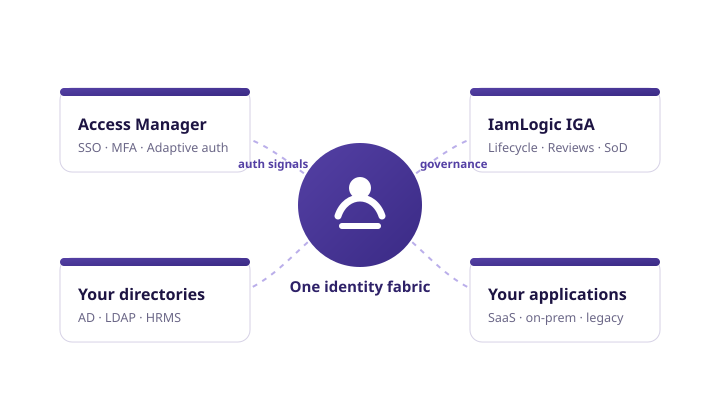

The IamLogic platform
Access and governance were never separate problems.
Vendors split identity into products; auditors and attackers never did. IamLogic's two products share one identity fabric — signals flow both ways, evidence lands in one place.

Better together
What the combination buys you
Each product stands alone. Together, they close the loop that point solutions leave open.
Authentication signals inform governance
Access Manager knows which entitlements are actually used, from where, and how often. During certifications, IGA surfaces that context — 'granted 2 years ago, never used' — turning rubber-stamp reviews into informed revocations.
Governance decisions enforce at login
When IGA revokes access, changes a role or expires a contractor, the change is live at the next login attempt — not at the next manual sync. The front door and the rulebook stay consistent.
One audit trail across both
Who authenticated, with which factor, to which application, holding which approved entitlements, last reviewed when. One correlated narrative for auditors instead of four exports.
One vendor, one deployment, one support line
Same connector framework, same deployment models, same Bengaluru-based engineers on support. No systems-integration project to make your own identity stack talk to itself.
Architecture principles
Engineered for regulated, heterogeneous, Indian enterprise estates
- Deployment freedom: on-premises, private cloud, public cloud or hybrid — identical product, HA and DR topologies supported.
- Data sovereignty: identity data, credentials and logs can remain entirely within your infrastructure in India.
- Python extensibility: authentication policies and application connectors are scriptable — your edge cases don't wait for our roadmap.
- Legacy reality: browser-plugin SSO and ticketing-workflow provisioning cover the applications that federation and APIs never will.
- Evidence by default: every decision — human or automated — is logged for traceability.
Where to start
Start with your most urgent gap
Audit finding on access reviews or orphan accounts?
Start with IamLogic IGA — certifications and lifecycle automation first.
VPN without MFA, or legacy apps outside SSO?
Start with Access Manager — the front door closes fastest.
Greenfield identity programme (DPDP-driven)?
Deploy both — the DPDP mapping spans access control and governance.
See IamLogic on your own applications
A 30-minute walkthrough of Access Manager and IamLogic IGA, mapped to your environment, your applications and your compliance obligations.